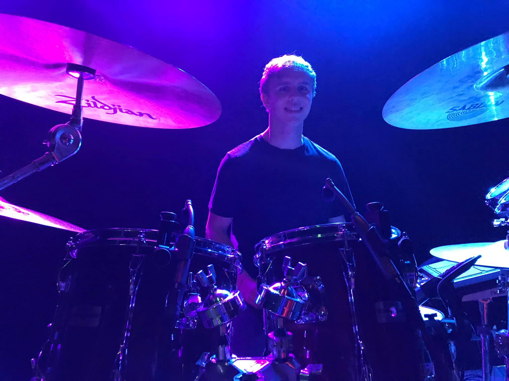
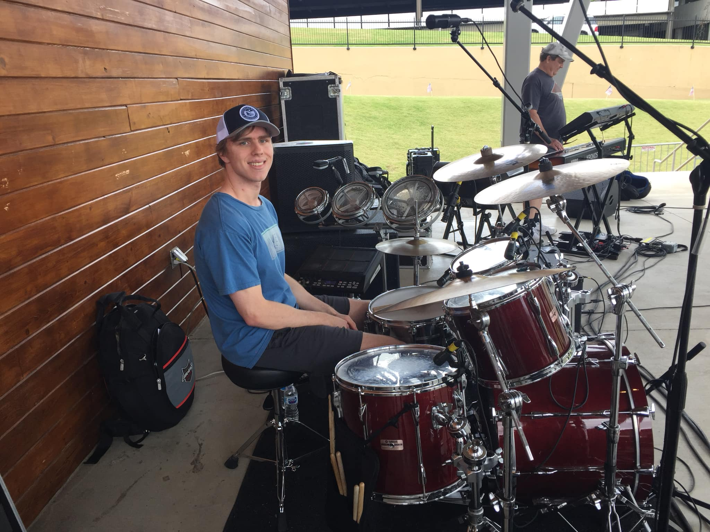
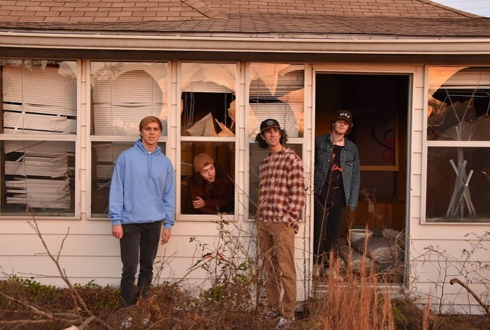

Upon graduation from Georgia Tech in Fall 2021, I hope to be able to make an impact in the aerospace industry. I have been fascinated with aircraft since a very young age, and I always knew that I would want to help solve problems that will advance humanity in safe and efficient transportation on earth as well as beyond. My primary areas of interest within aerospace engineering include design and analysis of fixed wind aircraft, both civilian transport and fighter jets, including structures, control systems, and propulsion systems.